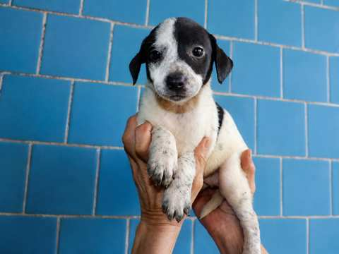

Yolotzin Ramírez es una xoloitzcuintle hembra de variedad con pelo, con coloración bicolor blanco y negro, nacida el 4 de julio de 2026. Este expediente reúne su identidad, su filiación y el registro digital vinculado a su NFT documental.
Identidad y linaje
Raza: Xoloitzcuintle
Sexo: Hembra
Variedad: Con pelo
Color: Blanco y negro / bicolor
Nacimiento: 4 de julio de 2026
Criadero: Xolos Ramírez
Padre: Ticuiz Langarica
Madre: Axia Ramírez
Registro fotográfico
Las siguientes fotografías forman parte del expediente visual de Yolotzin durante su etapa de cachorro y documentan sus marcas bicolores características.


NFT documental
Yolotzin cuenta con un NFT documental minteado en eCash como capa adicional de trazabilidad de su identidad. El propio NFT utiliza esta página como enlace público de su expediente, conectando el registro on-chain con la documentación web de Xolos Ramírez.
TXID: 5ef654e40992b3df24b5902780c73530d8ca8f3171eb81fbc9c44a3813107887
Una identidad que puede crecer con su historia
Este expediente podrá ampliarse conforme Yolotzin avance en su vida: documentación veterinaria, identificación, pedigree, fotografías, hitos familiares y otros registros relevantes podrán incorporarse sin perder la referencia original que ya quedó enlazada desde su NFT.